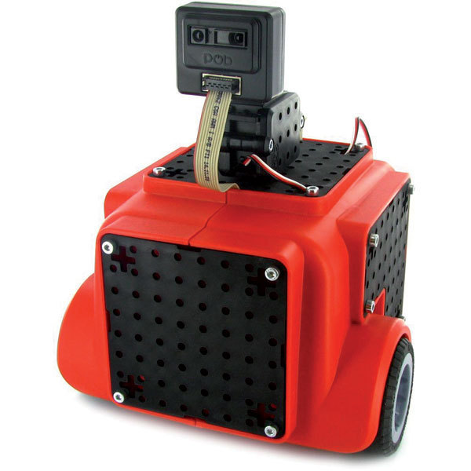
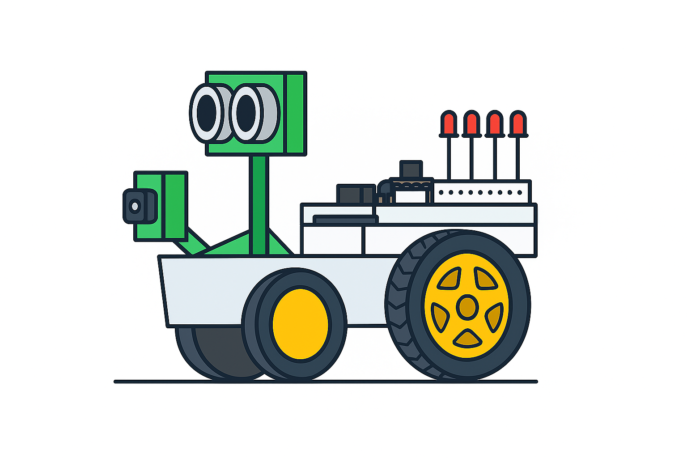
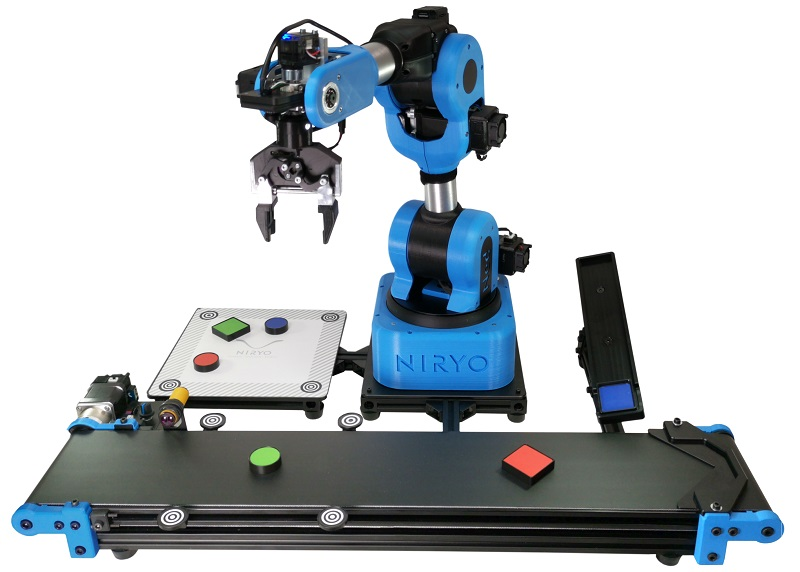

Robot autonome de compétition Sumo, conçu de A à Z. La partie la plus technique était le pont en H pour piloter les moteurs : on a comparé transistors bipolaires et MOSFETs en simulation (PSIM, Tinkercad) avant de valider sur plaque à trous, puis on a routé le PCB sous KiCad.
- Étude comparative bipolaire vs MOSFET : les MOSFETs s'imposent nettement (7 V / 53 mA contre 2,6 V / 18,8 mA en bipolaire, soit 16 216 tr/min contre 6 432 tr/min sur Tinkercad)
- Simulations sur PSIM et Tinkercad avant prototypage, puis validation expérimentale sur plaque à trous
- PCB final routé sous KiCad (12,4 × 9,5 cm), avec 4 trous de fixation et transistors IRF620 / IRF9520
- 3 capteurs IR CNY70 pour la limite d'arène, télémètre ultrasonique pour détecter l'adversaire
- Arduino Uno comme unité centrale : lecture des capteurs, décision, commande PWM du pont en H

Automatisation d'un monte-charge industriel à 3 niveaux sur Siemens S7-1200, programmé en Ladder sur TIA Portal. On est partis des équations logiques, on a câblé le coffret, et on a débogué jusqu'à ce que tout soit conforme au cahier des charges.
- 8 entrées (3 capteurs de position C1-C3, 3 boutons d'appel BP1-BP3, mode auto/manu, arrêt d'urgence) et 5 sorties (3 voyants d'étage, moteur montée/descente) câblées et déclarées dans TIA Portal
- Programmation en Ladder logique combinatoire, basée sur les équations établies en amont
- Détection et correction d'une erreur de câblage (alimentation branchée sur une sortie plutôt que sur le bornier 2L) à l'aide d'un voltmètre
- Correction d'un doublon de sortie dans le programme Ladder, puis gestion de l'arrêt d'urgence en contact normalement fermé pour la sécurité
- Validation du cycle complet en mode automatique et manuel sur la maquette réelle

Robot autonome réalisé avec Simon Bérubé, bien plus qu'un simple suiveur de ligne : il détecte des obstacles, les contourne, suit un mur, lit des couleurs au sol et choisit son itinéraire en conséquence. Mission en 9 étapes programmée en C sur Arduino.
- 4 capteurs LDR sous le châssis via convertisseur ADS1115 (I2C) pour le suivi de ligne, variable
routeencodée sur un octet pour sélectionner la correction moteur - Capteur ultrasonique HC-SR04 monté sur servomoteur (Timer1) pour mesurer la distance et alterner entre contournement d'obstacle et suivi de mur
- Capteur de couleurs TCS34725 (RGB) avec contacteur physique : rouge = gauche, bleu = tout droit, vert = droite
- Commande moteur entièrement gérée par registres (Timer0, OCR0A/B) avec 8 fonctions de direction distinctes
- Boucle principale structurée en 9 étapes : suivi de ligne, détection couleur, repositionnement, contournement, suivi de mur, choix de chemin

Mise en œuvre d'un système automatisé de Pick and Place à l'aide du robot Niryo NED2 et d'un convoyeur. Le projet consistait à comparer trois architectures de commande, de la plus simple à la plus centralisée.
- Mode 1 : convoyeur piloté par sa control box, robot en autonomie via Vision Pick (détection de pièces rondes ou carrées par caméra intégrée, quelle que soit la couleur)
- Mode 2 : robot NED2 pilote directement le convoyeur via ses blocs fonctionnels et gère la détection IR en plus du Pick and Place
- Mode 3 : Arduino Uno comme unité centrale de commande (détection IR, pilotage convoyeur, déclenchement du robot), partiellement validé en raison d'instabilités matérielles
- Programmation par blocs (Niryo Studio) avec phases de déplacement en position sécurité pour éviter les collisions
- Calibrage d'un espace de travail 4 points pour la Vision Pick, avec gestion des décalages de positionnement